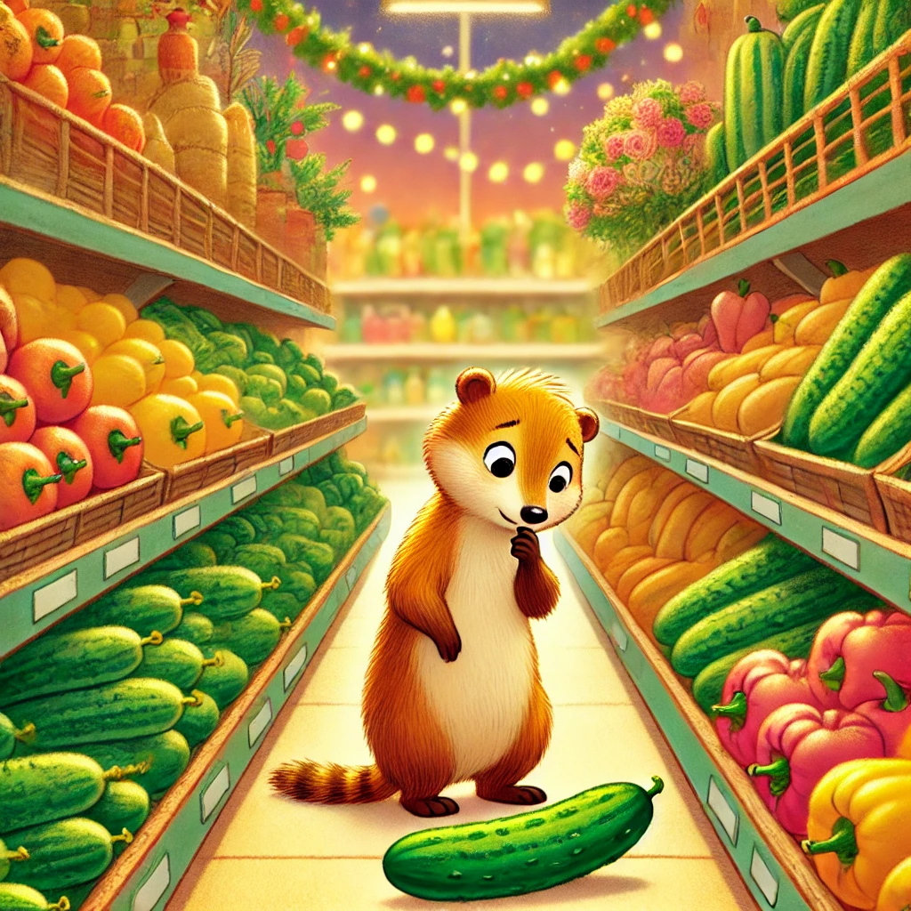
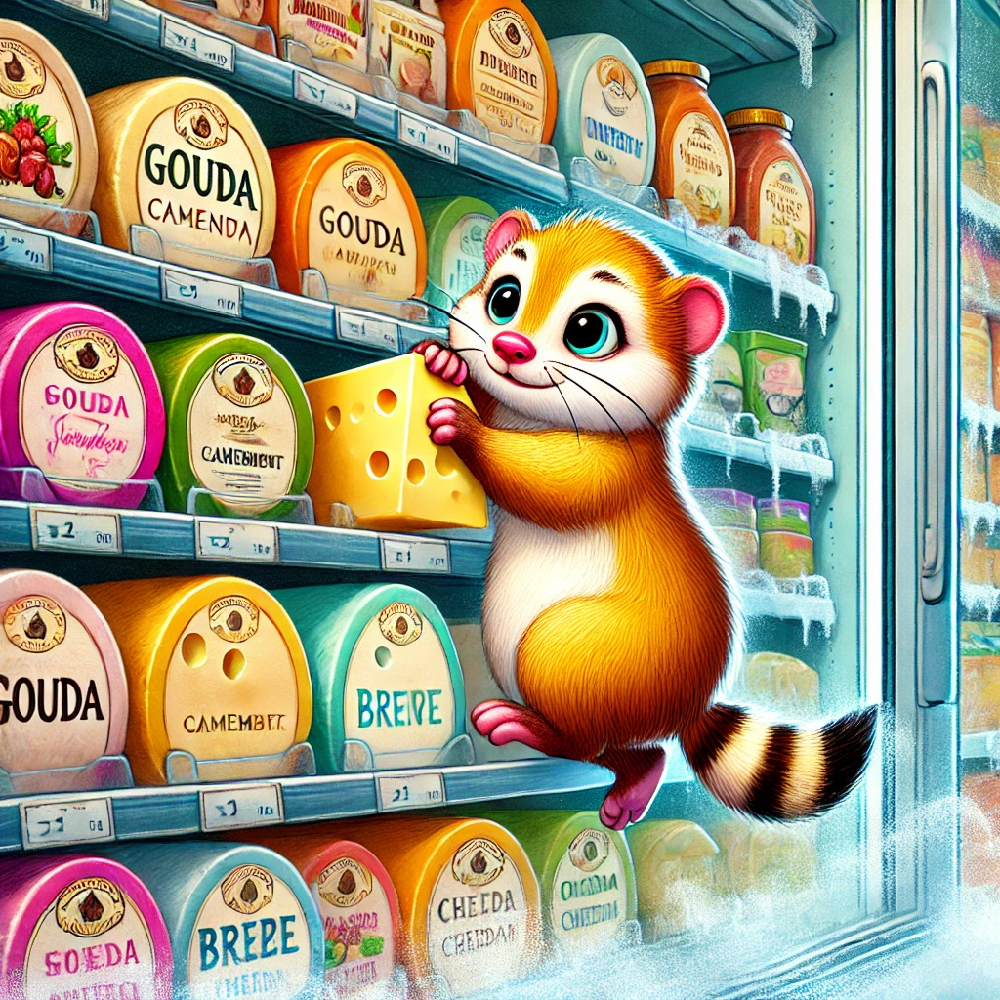
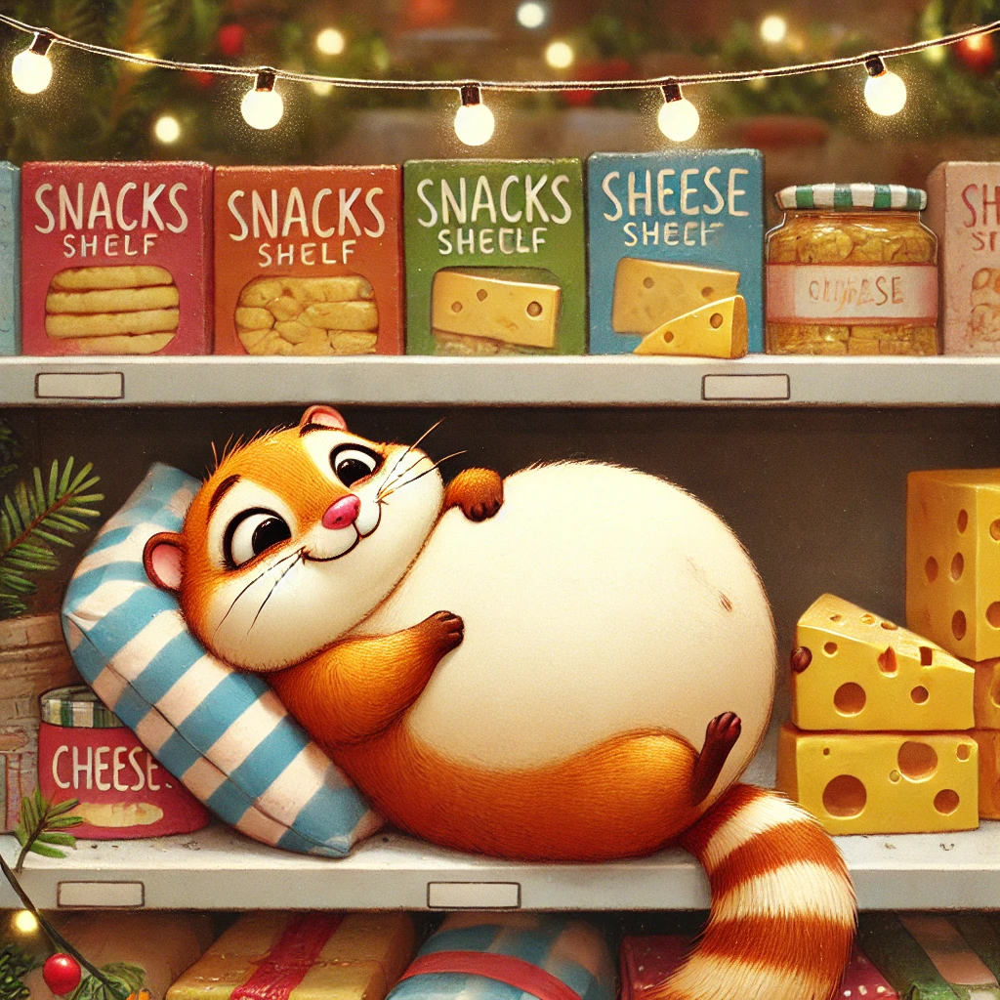

Es war einmal ein Wiesel namens Winnie, das oben auf dem Knabbereienregal eines Supermarkts in Leknes auf den Lofoten wohnte. Winnie war ein faules Wiesel und ihre Gemütlichkeit brachte sie besonders gerne durch das Essen von Chips und Schlafen zum Ausdruck.
Eines Tages beschloss Winnie, einen Spaziergang zu machen. Sie schlenderte - natürlich sehr langsam - von einem Ende des Supermarkts zum anderen. Sie kam am Gemüsestand vorbei. Dort überlegte sie sich, ob es an der Zeit war, mal eine Gurke zu probieren. Schnell verwarf sie diese Idee. Gurken schmecken nach grünem Wasser.
Da Winnie aber wie immer Hunger hatte, ging sie weiter Richtung Kühlregal. Vielleicht ein bisschen Joghurt? Mit Erdbeeren? Ihhh, Erdbeeren. Winnie schüttelte sich kurz und rannte geradeaus weiter, bis ihr ein herrlicher Duft in die Nase stieg: Käääse! Winnie kletterte am Kühlregal empor - ganz ungewöhnlich elegant und motiviert bei der Vorstellung, einen großen Bissen Gouda zu ergattern.
Oben angekommen tat sich ein Paradies vor ihr auf: Camembert, Emmentaler, Brie, Cheddar, Butterkäse... Winnie tauchte mit beiden Händen - äähm Pfoten - tief in das gelbe Glück ein. Wie so oft vergaß Winnie die Welt, wenn sie am Schmausen war.
Viel zu spät merkte Winnie, dass ihr kleiner Bauch sich in einer runden Kugel nach außen wölbte. Käsekoma, dachte Winnie. Schwerfällig kletterte Winnie, etwas durchgefroren aber trotzdem recht zufrieden mit sich, aus der Kühlung. Langsam und gemütlich machte sie sich auf den Weg zurück nach Hause, wo sie völlig zufrieden einschlief.